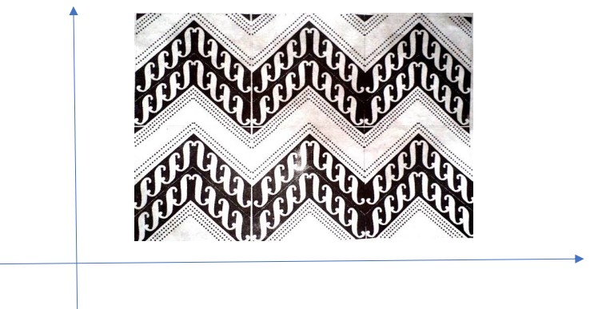

Quiz
1. Titik A(-2,-5) direfleksikan terhadap titik O kemudian dilanjutkan dengan refleksi terhadap sumbu x. Tentukan bayangan titik A tersebut!
2. Gambar berikut merupakan motif batik parang yang berasal dari Solo,Jawa Tengah. Lakukanlah pencerminan motif batik ini terhadap sumbu-x (sumbu horizontal) pada kertas millimeter block . Happy trying!
